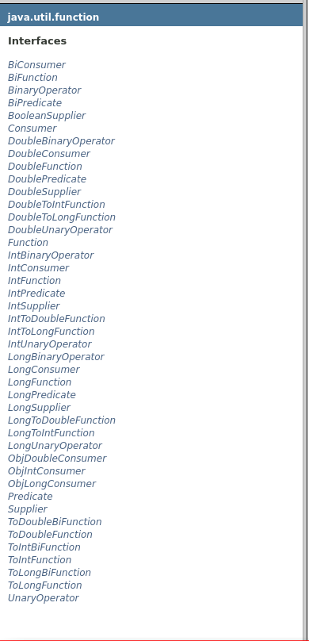

在上一次使用自定义的函数接口来使用lambda表达式，每一个lambda都要自定义一个已知的接口来实现，这样比较麻烦，如果可以使用通用的函数式接口，那么会方便很多。幸运的是java8中新增了一些通用的函数式接口供我们使用。下面就来看看吧。
函数式接口
对于只有一个抽象方法的接口，需要这种接口的对象时，就可以提供一个lambda表达式。这种接口称为函数式接口 —《java核心技术卷I基础知识第10版》
一言蔽之，只有一个抽象方法的接口称为函数式接口 —《java8实战》
对于java8-lambda表达式一节中使用的ApplePredicate,AppleWeight,AppleWeightAdd接口都是函数接口，但是这些函数接口不具有通用性。java8提供了一系列通用的函数式接口，位于java.util.function包中

可以看见这个包中只有含有接口，没有任何的抽象类，类，这些接口都需于函数接口，不要慌张，这些接口大部分表达的意思相同，只有少量的区别
函数描述符
函数式接口的抽象方法的签名基本上就是lambda表达式的签名。我们将这种抽象方法叫做函数描述符
lambda表达式的参数和返回值都要和函数式接口的签名对应，比如说函数式接口ApplePredicate的签名就是接收一个Apple类型的参数返回一个boolean类型的参数
所以基本上满足接收一个Apple类型返回一个boolean类型的lambda表达式都可以看作是ApplePredicate的实现
下面来介绍几个函数式接口
Consumer
翻译过来为消费者，接收一个参数没有返回值。
源码接口如下：
public interface Consumer<T> {
void accept(T t);
}
使用Consumer来实现一个List的遍厉
public static <T> void forEach(List<T> inventory,Consumer<T> consumer) {
for(T t : inventory) {
consumer.accept(t);
}
}
//使用forEach遍历列表
forEach(redApples,apple -> System.out.println(apple));
其他Consumer系列接口
接口 抽象方法 DoubleConsumer void accept(double value); IntConsumer void accept(int value); LongConsumer void accept(long value); ObjDoubleConsumer<T> void accept(T t,double value); ObjIntConsumer<T> void accept(T t,int value); ObjLongConsumer<T> void accept(T t,int long value); BiConsumer<T,U> void accept(T t,U u);
Predicate
谓词，用来描述或判断客体性质等(百度百科),这里用来表示判断
Predicate接口有5个方法，包括4个默认方法，1个抽象方法，默认方法以后再说，这里主要关注抽现方法
接口源码如下,接收一个泛型参数，返回一个boolean型数据，至于根据什么返回，怎么判断交给用户来实现
public interface Predicate<T>{
boolean test(T t);
}
使用Predicate来实现过滤
public static <T> List<T> filter(List<T> inventory,Predicate<T> pred){
List<T> result = new ArrayList<>();
for(T t : inventory)
if(pred.test(t))
result.add(t);
return result;
}
筛选红色苹果
List<Apple> redApples = filter(inventory,(Apple apple) -> apple.getColor().equals("red"));
forEach(redApples,apple -> System.out.println(apple));
其他Predicate系列接口
接口 抽象方法
DoublePredicate boolean test(double value);
IntPredicate boolean test(int value);
LongPredicate boolean test(long value);
BiPredicate<T,U> boolean test(T t,U u);
DoublePredicate,LongPredicate,IntPredicate分别是用来判断double,long,int类型，由于double,long,int类型在使用泛型时会有一个自动装箱拆箱的过程，这是为了提高效率实现的三个类,使用上和Predicate没有什么区别
Function
函数，接收一个参数返回一个值
public interface Function<T,R>{
R apply(T t);
}
使用Function来实现遍历列表，并对列表进行某种操作，操作后返回一个值
public static <T,R> List<R> map(List<T> inventory,Function<T,R> func){
List<R> result = new ArrayList<>();
for(T t : inventory)
result.add(func.apply(t));
return result;
}
使用map来将列表中的所有苹果的重量返回并用列表返回
List<Integer> weights = map(inventory,(Apple apple) -> apple.getWeight());
其他Function系列接口
接口 抽象方法
DoubleFunction<R> R apply(double value);
IntFunction<R> R apply(int value);
LongFunction<R> R apply(long value);
ToDoubleFunction<T> double apply(T value);
ToIntFunction<T> int apply(T value);
ToLongFunction<T> long apply(T value);
BiFunction<T,U,R> R apply(T t,U u);
ToDoubleBiFunction<T,U> double apply(T t,U u);
ToIntBiFunction<T,U> int apply(T t,U u);
ToLongBuFunction<T,U> long apply(T t,U u);
可以看见大多数接口都是为了解决基本类型的封箱拆箱进行优化的接口
Supplier
供应商，没有参数，只有返回值。少有使用，这里只提供接口
接口 抽象方法
Supplier<T> T get();
BooleanSupplier boolean get();
DoubleSupplier double get();
IntSupplier int get();
LongSupplier long get();
其他函数式接口
java.util.function包中还有几个使用Operator结尾的接口，现在还不太明白如何使用，以后再加。
参考源码
限于知识和认识有限，页面中难免出现纰漏，如有错误可以发送邮件至liuxin739525@163.com邮箱指正，我将不胜感激。